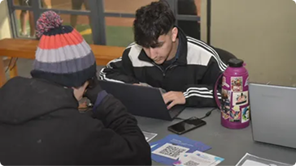
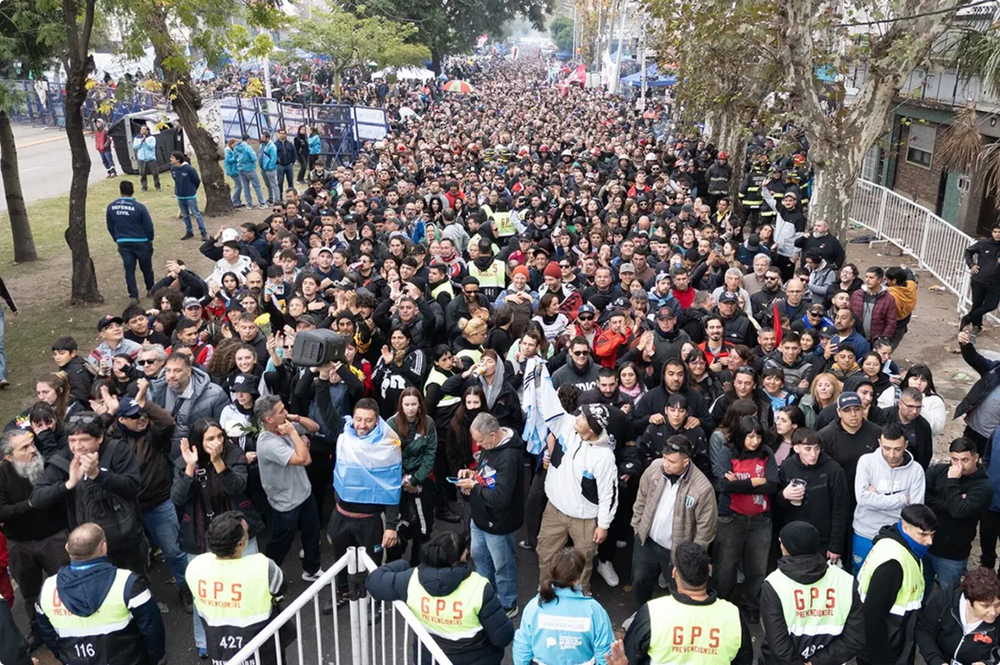
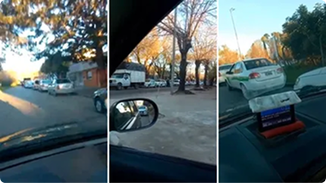
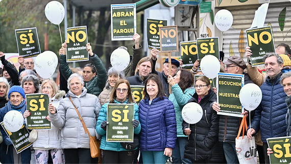
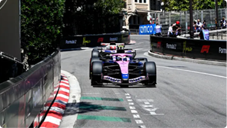
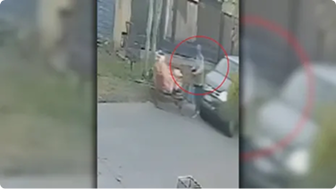

Punto joven. Llega a City Bell una jornada de capacitación laboral y educación financiera
Reportado por Andrea Salvatierra


Reportado por Andrea Salvatierra

Reportado por Alejandro Capparelli
Reportado de forma anónima

La caminata se realizó este sábado para rechazar el ensanche del Parque Saavedra que implicará una reducción del tránsito y la eliminación de ramblas.


